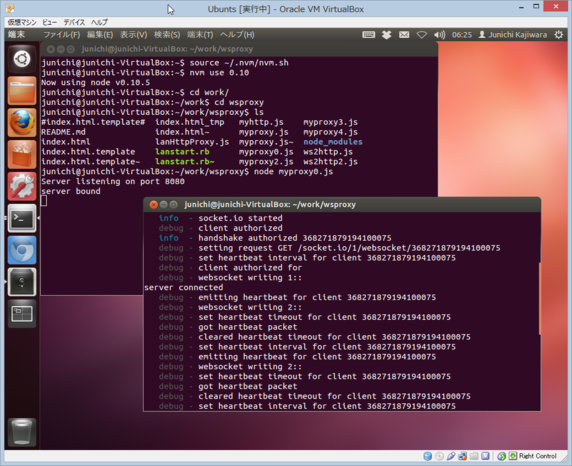

- iPadで外出先でも自由にネットにアクセスしたい
- iPadの３G付きは維持費が掛かる
- iPhone4Sを持っている
- iPhone4SのSafariはWebSocketが使える
- 実装方法は不明だが、JBせずにテザリングの実績がある模様
開発背景
システム概要図

課題その１
コンパクトな機器が必要
iPhone4Sとともに携帯することが出来るサイズで、以下が可能なもの
- node.jsを動作させることができる
- 無線LANのアクセスポイントになる
node.jsとは
- サーバサイドのJavaScript
- Apacheより多くのリクエストをさばける
- HTTPサーバの実装が比較的容易
- WebSocket通信のライブラリもいくつか存在する
- 今回eはSocket.ioライブラリを使用
課題その１の解決
Raspberry Piを導入
- 手のひらサイズのワンボードLinux
- iPhone,iPadの他に持ち運ぶ必要があるがこのサイズなら問題なし！
- Linuxベースなので、簡単に多くのOSSが動かせる!
課題その２
- Raspberry Piの電源問題
- Wifiアダプター（GW-USMicro300）の消費電流
- 最大320mA必要
- Raspberry Pi本体の消費電流
- 500mA弱程度必要
- 乾電池4本のUSB簡易電源の出力
- 800mA程度
20mA程度足りなくなる！
単3乾電池4本で駆動させ、勉強会様に動作状況を動画に収めようと していたが途中で落ちてしまった。。。
解決策
- USBの電源分岐のあるケーブルをつかってWifiアダプタを使う
- Wifiアダプタへの電源を別途用意
- 大容量のモバイルバッテリーの導入
- 2端子あり（1A,2.1A）
課題その３
WAN側のソフトとのiPhone4S側との同期問題
node.jsがイベント駆動の非同期型のソリューションの為に、 プログラム側で必要に応じて同期を取る必要がある。
これまでは、シリアルに処理番号を発行していたが、 iPhone4S側で一定時間が経過してロックが掛ると 処理番号の振り出しがリセットされてしまう。 これが起きると、WAN側もリセットする必要あった。
解決策
iPhone4S側で発行する処理番号をUUIDに変更
UUIDは分散システム上でどこかが統制を取らずとも、一意に特定可能な識別子の作成を目的としており、 重複や偶然の一致が起こりえないと確信して用いることができる
UUIDの生成もOSSを利用（node-uuid）
この方式を採用することにより、WAN側に複数のiPhone4Sから接続しても処理が可能となった。
動作画面イメージ（iPhone4S）
Wifiのアクセスポイントを設定して、iPhone4Sでnode.jsのアプリのURLを指定して 開くと表示される画面

動作画面イメージ（WAN側）
iPhone4Sから３G回線経由でのアクセスを受けるPCの画面
今回のOSSに参加して
- Raspberry Piを購入出来た
- Linuxでの無線LANの周辺知識が得られた
- HTML5のリモートデスクトップクラインとnoVNCの存在が分かった
- SDカードのデータが飛びやすい（フツーにリブートするだけでも起こった）
- node.jsの勉強が出来た
- HTML5の勉強が出来た(このスライドもHTML5製)
- 久しぶりにお酒が飲めた！(懇親会にて)